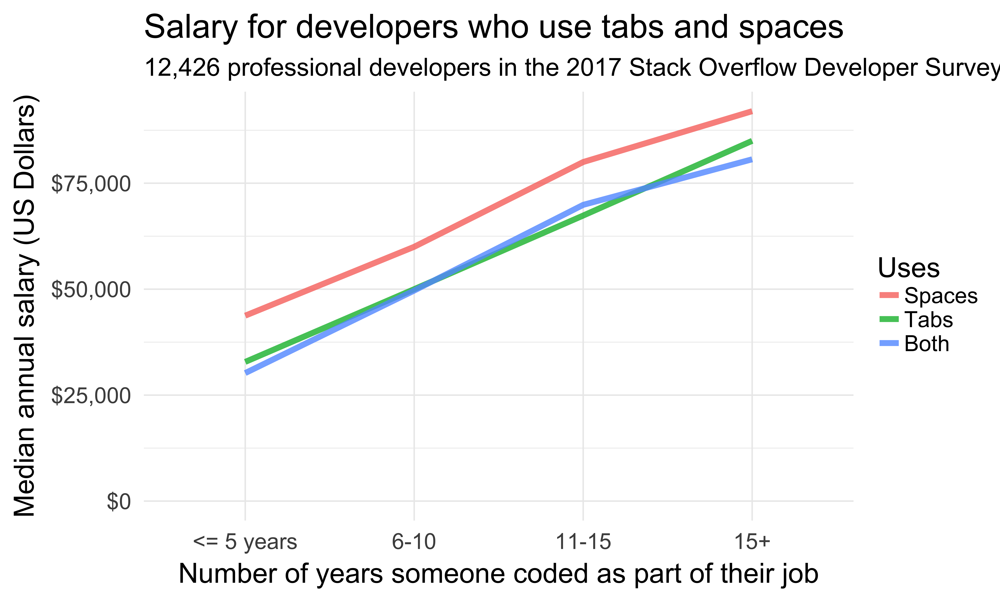
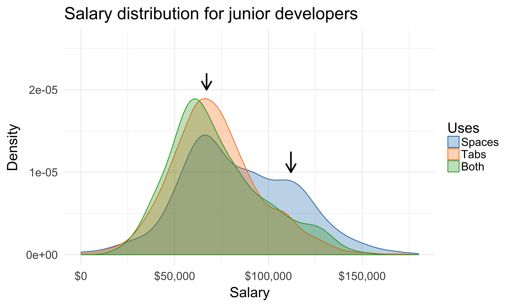
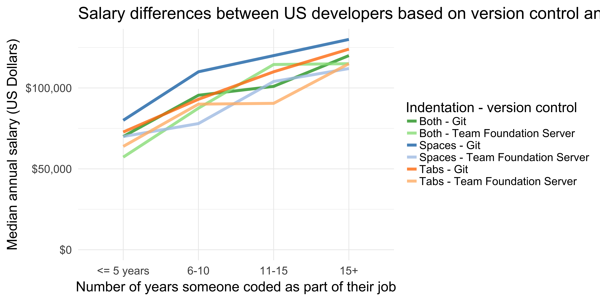
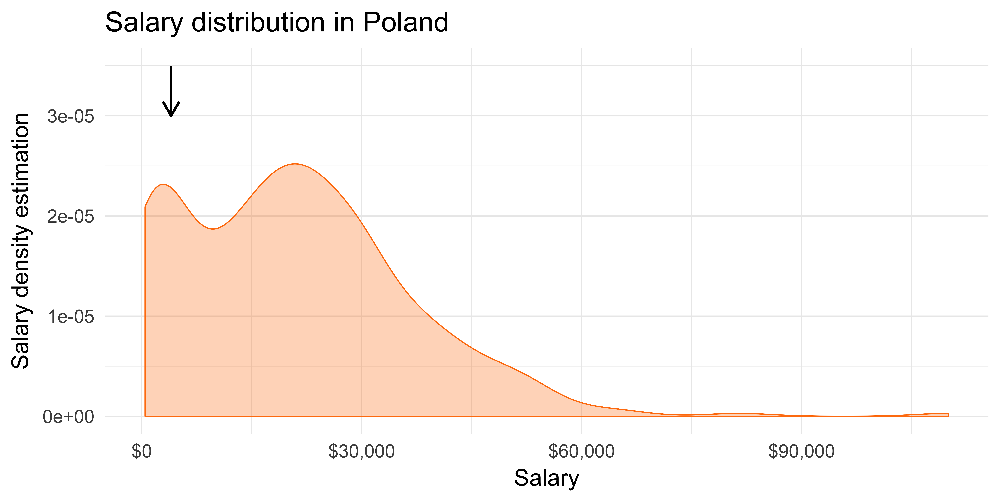

The Mysterious Correlation
A detective story
Evelina Gabašová
@evelgab





Correlation is not causation!
Correlation and causation
Everyone loves a nice correlation!

Causal language
for correlation data
Causal language
for correlation data

Things to check
- correlation or causation (randomised study?)
- small sample size
- result by chance
- hidden cause (latent variable)
Sample size?
| Spaces | Tabs | Both | |
|---|---|---|---|
| <= 5 years | 4508 | 6106 | 2468 |
| 6-10 | 3917 | 3210 | 1386 |
| 11-15 | 1471 | 1052 | 445 |
| 15+ | 2080 | 1291 | 723 |
Sample size
Result by chance?
Hidden cause?
Do storks deliver babies?

Source: Claude Covo-Farchi
Testing the hypothesis
Matthews, R. (2000), Storks Deliver Babies (p= 0.008). Teaching Statistics, 22: 36–38.


Correlation and causation
- Randomised experiments
- A/B testing
Correlation and causation
from observational data
Possible, but we need a lot of assumptions
- know all the variables
- know the right model
do-calculus

Predicting salary with linear regression
- Country
- Years of programming experience
- Tabs and spaces usage
- Developer type and language
- Level of formal education (e.g. bachelor’s, master’s, doctorate)
- Whether they contribute to open source
- Whether they program as a hobby
- Company size
What happens if we remove Tabs and Spaces?
Diving deeper into linear regression
- Full model with the information on tabs and spaces included
- Reduced model without the information on tabs and spaces
Coefficient of determination
how much variance in salary can the model explain
| Model | Coefficient of determination \(R^2\) | Adjusted \(R^2_{adj}\) |
|---|---|---|
| Full model | 0.4008 | 0.3892 |
| Reduced model | 0.3938 | 0.3892 |
Collinearity?
What changed in the reduced model?
More significant in the reduced model
- Years of programming experience
- Contributing to open source
- PHP
Open source?
Open source contributors use spaces more than tabs
Potential explanation?
Language effects?
Language effects?

Language and open source?
Tabs, spaces, open source & salary
How does it fit together?

Exploring salary distributions
Based on experience level

What’s different for these users?
… more statistical testing
The importance of version control
| Higher salary | Lower salary | |
|---|---|---|
| Git | 168 | 660 |
| I use some other system | 17 | 30 |
| Subversion | 4 | 47 |
| Team Foundation Server | 6 | 92 |
Version control and tabs/spaces
##
## Pearson's Chi-squared test
##
## data: .
## X-squared = 258.48, df = 18, p-value < 2.2e-16Version control and salary

Git and Subversion

Why is version control so important?
github.com/evelinag/tabs-spaces-talk
But can we trust the data?
Salary distribution

What’s wrong?


Missing data
Statistics of missing data
- missing completely at random
- missing at random
- missing not at random
Missing completely at random
Missing at random

Missing not at random

Missing data on salaries
typically missing at random or missing not at random
Data traps
- missing data
- wrong data
accidentally or deliberately


Can you trust data?
Interpretation
Machine learning as a service
Machine learning
as learning-by-association
“As much as I look into what’s being done with deep learning, I see they’re all stuck there on the level of associations. Curve fitting.”
Judea Pearl